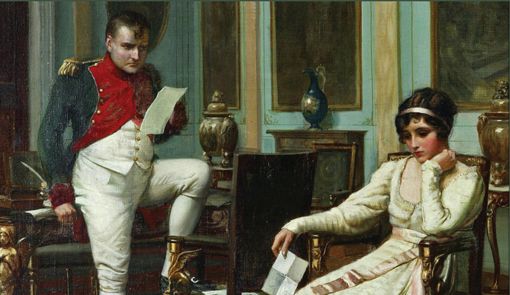
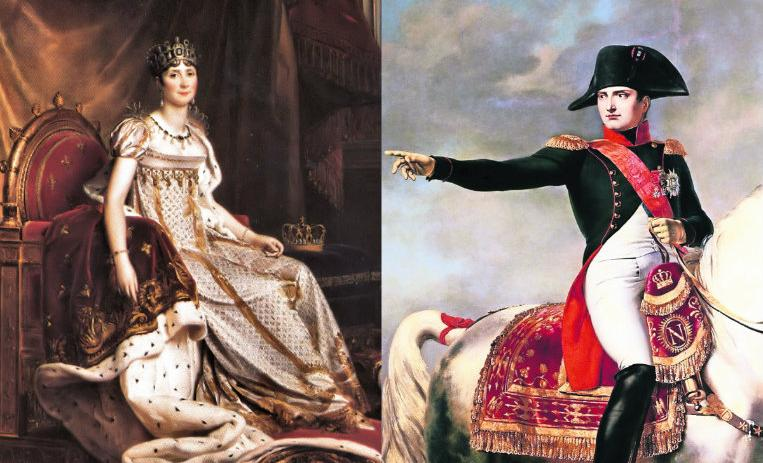
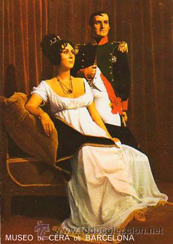
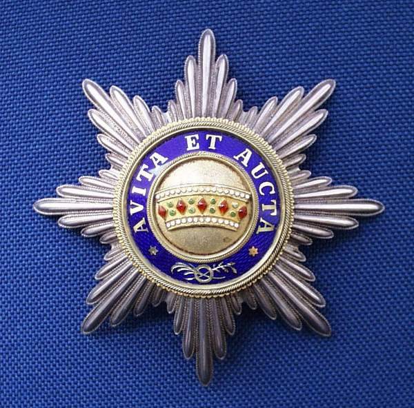

Napoleón I Bonaparte, mejorconocido como Napoleón Bonaparte, fue un militar y emperador francés, reconocido por ser un general republicano durante la revolución francesa y el directorio. También fue la mente maestra del golpe de Estado del 18 de brumario que lo convirtió en primer cónsul de la República el 11 de noviembre de 1799. Además, fue conquistador de gran parte del territorio europeo en los inicios de siglo XIX y se le consideró como uno de los mayores genios militares de la Historia. Nació el 15 de agosto de 1769 en Ajaccio, ciudad de la isla italiana de Córcega, que poco antes había sido convertida en territorio francés, fue hijo de Carlos Bonaparte y María Ramolino.
Al cumplir 10 años de edad, Napoleón Bonaparte y su hermano José, se trasladaron a Brienne-le-Château, con el objetivo de empezar sus estudios en la escuela militar. Al finalizar los estudios básicos pasó a la “Ecóle Royale Militaire” donde estudió artillería. Tras graduarse en septiembre de 1785, fue comisionado como teniente segundo de artillería, tomando posesión de sus nuevas obligaciones en el mes de enero del año 1786.
Durante el estallido de la Revolución Francesa en 1789, Napoleón se encontraba en Córcega, en donde apoyó a la facción jacobina y fue nombrado comandante segundo de la Guardia Nacional de Voluntarios de la isla. También fue el primero que usó sistemas de telecomunicación, la llamada “línea Chappe de semáforos”, implantada en 1792.
En el año de 1793 obtuvo el ascenso a general de brigada, gracias a sus méritos de guerra; y en el año 1795 Salvó a la Convención Nacional (el gobierno revolucionario republicano francés) de una insurrección parisina.
Boda

Para el 9 de marzo de 1796, Napoleón Bonaparte se casó con Josefina de Beauharnais. Días después de su matrimonio, Napoleón tomó el mando del Ejército francés en Italia, al que lideró exitosamente en la invasión de dicho país. En este año también restauró nuevamente la esclavitud, la cual estaba abolida desde 1794.
Distinciones honorificas

Fundador y Gran Maestre de la Legión de Honor. Fundador y Gran Maestre de la Orden de la Corona de Hierro. Fundador y Gran Maestre de la Orden de la Reunión.